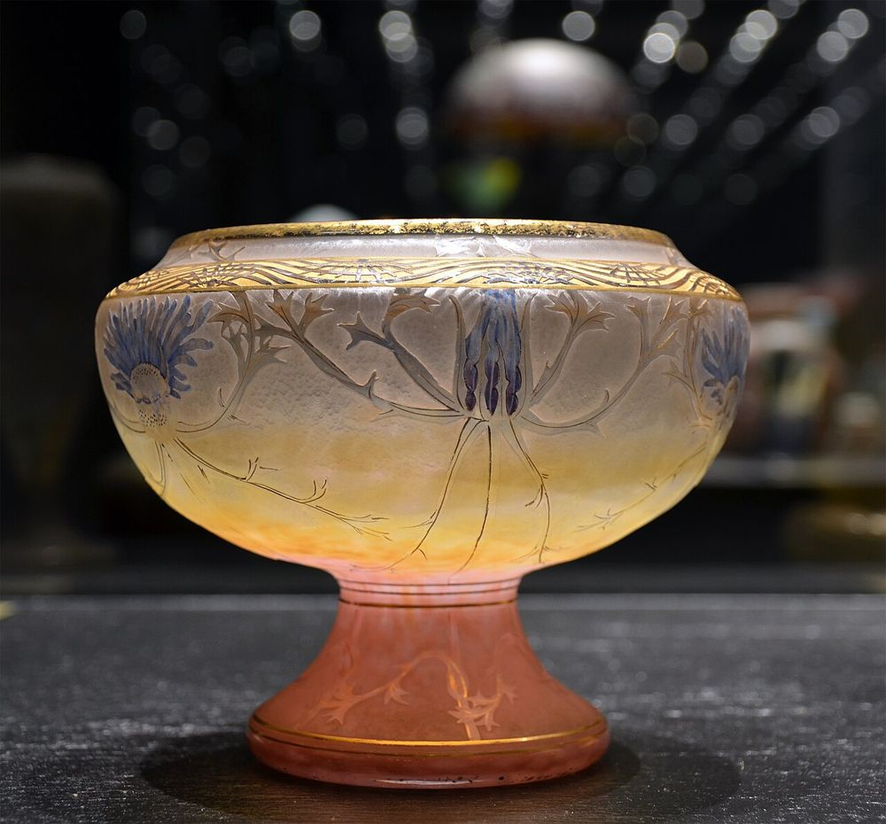

Vue d'ensemble
La pièce entière, de face, sur fond uni.
Accueil / Rachat & estimation
Décrivez vos pièces, joignez vos photos : un expert vous répond rapidement. Aucun engagement, aucun frais.

Quelques informations et vos photos : nous nous occupons du reste.
Vos informations restent confidentielles et ne sont jamais revendues. En savoir plus
Un téléphone et une bonne lumière suffisent. Voici les vues qui nous permettent d'identifier votre pièce.
La pièce entière, de face, sur fond uni.
La base, où se cache souvent la signature.
Un gros plan sur le décor ou la gravure.
Éclat, fêle, rayure : montrez-les sans les cacher.
Aucune donnée partagée avec des tiers.
On vous répond rapidement.
Emballage professionnel inclus.
Déplacement pour les grandes collections.
Règlement à la remise des pièces.